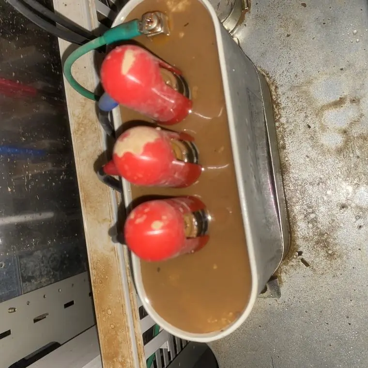
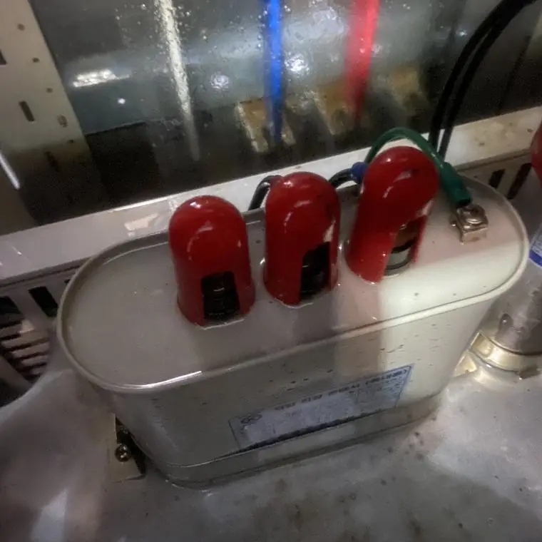

전기설비를 물로 닦아도 되나요?
최종 수정 2026-11-09
일반 물과 세제는 전기를 통하게 하고 잔류 수분이 단락과 감전을 일으킬 수 있어 권하지 않습니다. 전기설비용으로 만든 절연 세척제는 별도의 시험 자료를 확인하고 전문 업체가 사용해야 합니다.
왜 위험한가요?
- 물과 세제는 전기가 통할 수 있습니다.
- 틈에 남은 수분이 단락과 부식을 일으킬 수 있습니다.
작업 전

작업 후

전용 세척제는?
절연 성능, 비부식성, 잔유물 여부 등 자료를 확인할 수 있는 제품을 전문 업체가 사용합니다.
전기설비를 직접 물이나 일반 세제로 청소하는 것은 감전·단락 위험이 있어 권하지 않습니다. 반드시 전문 업체와 전기안전관리자에게 먼저 확인하세요.
자주 묻는 질문
젖은 설비는 어떻게 하나요?
직접 만지지 말고 전기안전관리자에게 먼저 연락하세요.
알코올은 괜찮나요?
설비 소재와 안전성은 다르니 전문가 확인이 필요합니다.
설비 사진과 정보를 남기시면 확인 후 견적을 안내해 드립니다.
무료 견적 문의하기이 글은 시공 업체가 공개한 자료와 일반적인 전기설비 관리 상식을 바탕으로 작성했습니다. 설비별 적용 여부와 결과는 현장 확인 후 달라질 수 있습니다.